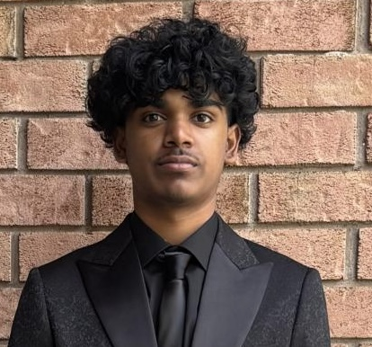

About Me

Hello! My name is Joel Victor. I am a student who is interested in technology, web development, and learning new skills.
I enjoy developing my knowledge through school projects and hands-on experience. I created this portfolio to showcase some of my work and the skills I have developed.
My goal is to continue improving my technical, problem-solving, and communication skills while gaining experience that will help me in my future career.
My Introduction Video
Watch my short introduction video to learn more about me, my interests, and my goals.